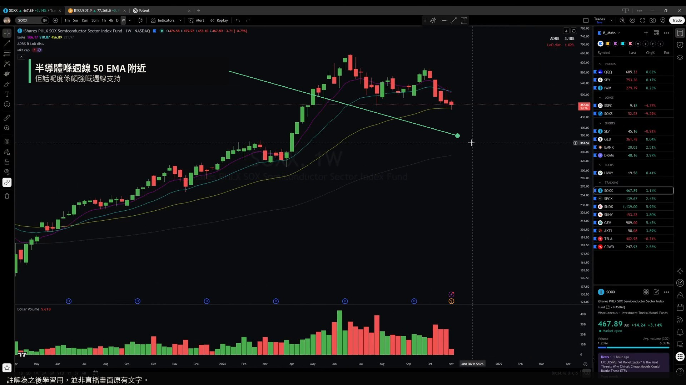

概要
半導體喺週線 50 EMA，佢覺得支持頗強
12:58 至 13:16，畫面係 SOXX 週線。Whisper 把 semis 聽成 sammies，word 時間把呢句定喺 12:58 開始。佢話半導體喺週線 50 EMA，呢個喺週線圖上係頗強嘅支持。呢句只係位置判斷，冇講一定要喺呢度入場或者離場，本頁亦唔寫死觸發價。
圖一 · 主圖
SOXX 週線：口中嘅 50 EMA 就喺呢附近
直播 12:58

原話
Semis is at the weekly 50 EMA, which is a pretty strong support on the weekly chart.
半導體喺週線 50 EMA，呢個喺週線圖上係頗強嘅支持。
點樣讀
週線見到價格靠近一條較慢均線。佢把呢個位置叫做週線 50 EMA，並讀成頗強支持。
圖例冇寫 50 呢個周期，所以本頁只標「佢口中嘅位置就喺呢附近」，唔會指定邊一條彩線就一定係 50。亦唔好把「頗強支持」讀成已經決定嘅做多或者平淡。
附註
注意事項
- 13:07 之後畫面開始切去其他周期，13:20 已係 SOXX 日線，但呢句對白對應嘅係 12:58 嘅週線。
- 圖例多數只有顏色同數值，冇印均線周期。本頁唔會把某條彩線寫死成 50 EMA。
- 畫面睇唔到成交價、倉位大細或者損益，所以唔寫死呢啲數字。